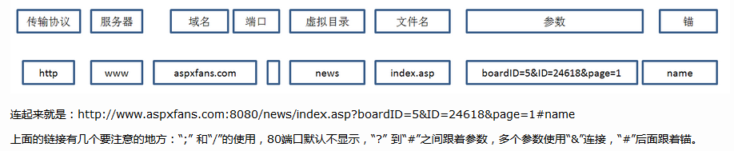
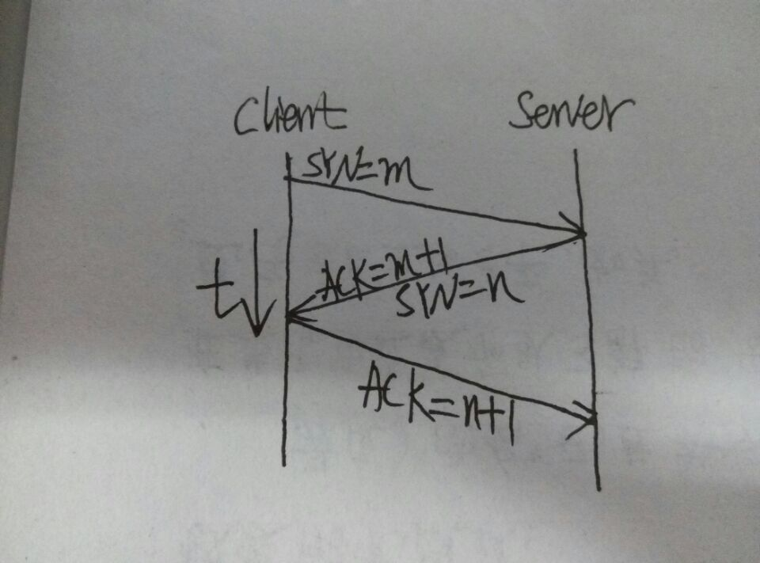
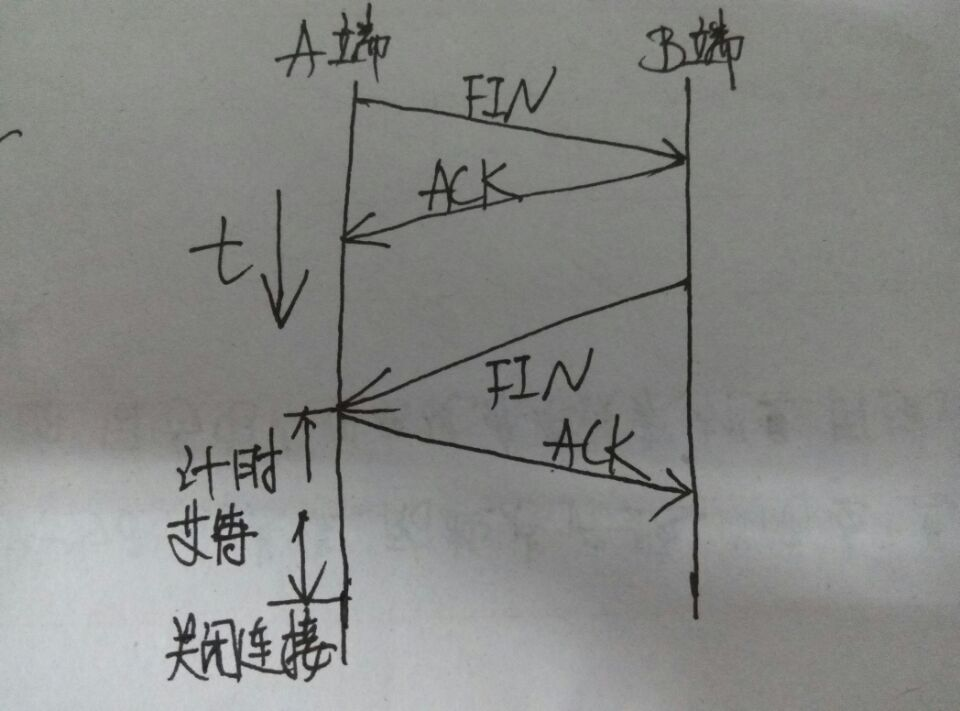

<!DOCTYPE html>
<html>
<head><meta name="generator" content="Hexo 3.8.0">
  <meta charset="utf-8">
  
  <title>http协议 | LIUXUEWEN&#39;S BLOG</title>
  <meta name="viewport" content="width=device-width, initial-scale=1, maximum-scale=1">
  
    <meta name="keywords" content="LIUXUEWEN,LIUXUEWEN's Blog">
  
  <meta name="description" content="一、HTTP简介  HTTP协议是Hyper Text Transfer Protocol（超文本传输协议）的缩写,是用于从万维网（WWW:World Wide Web ）服务器传输超文本到本地浏览器的传送协议。基于TCP/IP。 二、HTTP特点  1）工作方式：工作于客户端-服务端架构上。浏览器作为HTTP客户端通过URL向HTTP服务端发送请求，服务器向客户端发送响应。  2）简单快速：客户">
<meta name="keywords" content="网络协议">
<meta property="og:type" content="article">
<meta property="og:title" content="http协议">
<meta property="og:url" content="http://liuxuewen-site.github.io/2018/03/08/network-bs-http/index.html">
<meta property="og:site_name" content="LIUXUEWEN&#39;S BLOG">
<meta property="og:description" content="一、HTTP简介  HTTP协议是Hyper Text Transfer Protocol（超文本传输协议）的缩写,是用于从万维网（WWW:World Wide Web ）服务器传输超文本到本地浏览器的传送协议。基于TCP/IP。 二、HTTP特点  1）工作方式：工作于客户端-服务端架构上。浏览器作为HTTP客户端通过URL向HTTP服务端发送请求，服务器向客户端发送响应。  2）简单快速：客户">
<meta property="og:locale" content="default">
<meta property="og:image" content="http://liuxuewen-site.github.io/2018/03/08/network-bs-http/1.png">
<meta property="og:image" content="http://liuxuewen-site.github.io/2018/03/08/network-bs-http/2.jpg">
<meta property="og:image" content="http://liuxuewen-site.github.io/2018/03/08/network-bs-http/3.jpg">
<meta property="og:image" content="http://liuxuewen-site.github.io/2018/03/08/network-bs-http/4.png">
<meta property="og:updated_time" content="2019-01-25T10:15:31.668Z">
<meta name="twitter:card" content="summary">
<meta name="twitter:title" content="http协议">
<meta name="twitter:description" content="一、HTTP简介  HTTP协议是Hyper Text Transfer Protocol（超文本传输协议）的缩写,是用于从万维网（WWW:World Wide Web ）服务器传输超文本到本地浏览器的传送协议。基于TCP/IP。 二、HTTP特点  1）工作方式：工作于客户端-服务端架构上。浏览器作为HTTP客户端通过URL向HTTP服务端发送请求，服务器向客户端发送响应。  2）简单快速：客户">
<meta name="twitter:image" content="http://liuxuewen-site.github.io/2018/03/08/network-bs-http/1.png">
  
  
    <link rel="icon" href="/favicon.ico">
  
  <link href="//cdn.bootcss.com/font-awesome/4.7.0/css/font-awesome.min.css" rel="stylesheet" type="text/css">
  <link rel="stylesheet" href="/css/style.css">
  <script src="/js/pace.min.js"></script>
  

  
  

</head>
</html>
<body>
  <div id="container">
      <header id="header">
    <div id="banner"></div>
    <div id="header-outer">
        <div id="header-menu" class="header-menu-pos animated">
            <div class="header-menu-container">
                <a href="/" class="left">
                    <span class="site-title">I AM LIUXUEWEN</span>
                </a>
                <nav id="header-menu-nav" class="right">
                    
                    <a href="/">
                        <i class="fa fa-home"></i>
                        <span>Home</span>
                    </a>
                    
                    <a href="/archives">
                        <i class="fa fa-archive"></i>
                        <span>Archives</span>
                    </a>
                    
                    <a href="/about">
                        <i class="fa fa-user"></i>
                        <span>About</span>
                    </a>
                    
                </nav>
                <a class="mobile-header-menu-button">
                    <i class="fa fa-bars"></i>
                </a>
            </div>
        </div>
        <div id="header-row">
            <div id="logo">
                <a href="/">
                    
                </a>
            </div>
            <div class="header-info">
                <div id="header-title">
                    
                    <h2>
                        I AM LIUXUEWEN
                    </h2>
                    
                </div>
                <div id="header-description">
                    
                    <h3>
                        一个 宅不住 的 IT程序员
                    </h3>
                    
                </div>
            </div>
            <nav class="header-nav">
                <div class="social">
                    
                        <a title="Github" target="_blank" href="//github.com/liuxuewen-site">
                            <i class="fa fa-github fa-2x"></i></a>
                    
                        <a title="Weibo" "="">
                            <i class="fa fa-weibo fa-2x"></i></a>
                    
                        <a title="Weixin" "="">
                            <i class="fa fa-weixin fa-2x"></i></a>
                    
                </div>
            </nav>
        </div>
    </div>
</header>
      <div class="outer">
        <section id="main" class="body-wrap"><article id="post-network-bs-http" class="article article-type-post" itemscope="" itemprop="blogPost">
  <div class="article-inner">
    
      <header class="article-header">
        
  
    <h1 class="post-title" itemprop="name">
      http协议
    </h1>
    <div class="post-title-bar">
      <ul>
          
              <li>
                  <i class="fa fa-book"></i>
                  
                      <a href="/categories/网络协议/">网络协议</a>
                  
              </li>
          
        <li>
          <i class="fa fa-calendar"></i>  2018-03-08
        </li>
        <li>
          <i class="fa fa-eye"></i>
          <span id="busuanzi_value_page_pv"></span>
        </li>
      </ul>
    </div>
  

          
      </header>
    
    <div class="article-entry post-content" itemprop="articleBody">
      
            
            <h3 id="一、HTTP简介"><a href="#一、HTTP简介" class="headerlink" title="一、HTTP简介"></a>一、HTTP简介</h3><p>  HTTP协议是Hyper Text Transfer Protocol（超文本传输协议）的缩写,是用于从万维网（WWW:World Wide Web ）服务器传输超文本到本地浏览器的传送协议。基于TCP/IP。</p>
<h3 id="二、HTTP特点"><a href="#二、HTTP特点" class="headerlink" title="二、HTTP特点"></a>二、HTTP特点</h3><p>  1）工作方式：工作于客户端-服务端架构上。浏览器作为HTTP客户端通过URL向HTTP服务端发送请求，服务器向客户端发送响应。<br>  2）简单快速：客户向服务器请求服务时，只需传送请求方法和路径。<br>  3）无连接：即限制每次连接只处理一个请求。服务器处理完客户的请求并收到客户的应答后，即断开连接。<br>  4）无状态：即不具备保存之前发送过的请求或响应的功能。</p>
<h3 id="三、HTTP之URL"><a href="#三、HTTP之URL" class="headerlink" title="三、HTTP之URL"></a>三、HTTP之URL</h3><p>  HTTP使用统一资源标识符（Uniform Resource Identifiers, URI）来传输数据和建立连接。统一资源定位符（Uniform Resource Locator,URL）是一种特殊类型的URI，用来标识某一处资源的地址。</p>
<p>  URL的组成看下图：</p>
<p>  </p>
<h3 id="四、HTTP之请求消息Request"><a href="#四、HTTP之请求消息Request" class="headerlink" title="四、HTTP之请求消息Request"></a>四、HTTP之请求消息Request</h3><p>  请求消息包括以下格式：请求行（request line）、请求头部（header）、空行和请求数据四个部分组成。</p>
<p>  请求行，用来说明请求类型,要访问的资源以及所使用的HTTP版本。<br>  请求头部，紧接着请求行（即第一行）之后的部分，用来说明服务器要使用的附加信息。<br>  空行，请求头部后面的空行是必须的。<br>  请求数据也叫主体，可以添加任意的其他数据。</p>
<h3 id="五、HTTP之响应消息Response"><a href="#五、HTTP之响应消息Response" class="headerlink" title="五、HTTP之响应消息Response"></a>五、HTTP之响应消息Response</h3><p>  响应信息包括以下组成：状态行、消息报头、空行和响应正文。</p>
<p>  状态行，由HTTP协议版本号， 状态码， 状态消息 三部分组成。<br>  消息报头，用来说明客户端要使用的一些附加信息。<br>  空行，消息报头后面的空行是必须的。<br>  响应正文，服务器返回给客户端的文本信息。</p>
<h3 id="六、HTTP之状态码"><a href="#六、HTTP之状态码" class="headerlink" title="六、HTTP之状态码"></a>六、HTTP之状态码</h3><p>  状态代码有三位数字组成，第一个数字定义了响应的类别，共分五种类别:<br>  1xx：指示信息–表示请求已接收，继续处理<br>  2xx：成功–表示请求已被成功接收、理解、接受<br>  3xx：重定向–要完成请求必须进行更进一步的操作<br>  4xx：客户端错误–请求有语法错误或请求无法实现<br>  5xx：服务器端错误–服务器未能实现合法的请求</p>
<p>  常见状态码：<br>  200 OK                        //请求已成功，请求所希望的响应头或数据体将随此响应返回。<br>  302 Found                     //重定向，新的URL会在response 中的Location中返回，浏览器将会自动使用新的URL发出新的Request<br>  304 Not Modified              //代表上次的文档已经被缓存了， 还可以继续使用<br>  400 Bad Request               //客户端请求有语法错误，不能被服务器所理解<br>  401 Unauthorized              //请求未经授权，这个状态代码必须和WWW-Authenticate报头域一起使用<br>  403 Forbidden                 //服务器收到请求，但是拒绝提供服务<br>  404 Not Found                 //请求资源不存在，eg：输入了错误的URL<br>  500 Internal Server Error     //服务器发生不可预期的错误<br>  503 Server Unavailable        //服务器当前不能处理客户端的请求，一段时间后可能恢复正常<br>  更多状态码<a href="http://www.runoob.com/http/http-status-codes.html" target="_blank" rel="noopener">http://www.runoob.com/http/http-status-codes.html</a></p>
<h3 id="七、HTTP请求方法"><a href="#七、HTTP请求方法" class="headerlink" title="七、HTTP请求方法"></a>七、HTTP请求方法</h3><p>  HTTP1.0定义了三种请求方法：GET, POST 和 HEAD 方法。<br>  HTTP1.1新增了五种请求方法：OPTIONS, PUT, DELETE, TRACE 和 CONNECT 方法。</p>
  <figure class="highlight bash"><table><tr><td class="gutter"><pre><span class="line">1</span><br><span class="line">2</span><br><span class="line">3</span><br><span class="line">4</span><br><span class="line">5</span><br><span class="line">6</span><br><span class="line">7</span><br><span class="line">8</span><br><span class="line">9</span><br></pre></td><td class="code"><pre><span class="line">GET      请求指定的页面信息，并返回实体主体。</span><br><span class="line">HEAD     类似于get请求，只不过返回的响应中没有具体的内容，用于获取报头。</span><br><span class="line">POST     向指定资源提交数据进行处理请求（例如提交表单或者上传文件）。</span><br><span class="line">         数据被包含在请求体中。POST请求可能会导致新的资源的建立和/或已有资源的修改。</span><br><span class="line">PUT      从客户端向服务器传送的数据取代指定的文档的内容。</span><br><span class="line">DELETE   请求服务器删除指定的页面。</span><br><span class="line">CONNECT  HTTP/1.1协议中预留给能够将连接改为管道方式的代理服务器。</span><br><span class="line">OPTIONS  允许客户端查看服务器的性能。</span><br><span class="line">TRACE    回显服务器收到的请求，主要用于测试或诊断。</span><br></pre></td></tr></table></figure>
<h3 id="八、GET和POST"><a href="#八、GET和POST" class="headerlink" title="八、GET和POST"></a>八、GET和POST</h3><p>  说到请求，肯定要比较一下GET和POST的区别<br>  1）GET提交的数据放在URL后，以?分割URL和数据，参数之间以&amp;相连，POST是把提交的数据放在HTTP包的Body中。<br>  2）GET提交的数据大小有限制（因为浏览器对URL的长度有限制），而POST方法提交的数据理论上没有限制。<br>  3）POST的安全性要比GET的安全性高，因为GET提交的数据会在地址栏中显示出来，POST不会。<br>  4）GET方式需要使用Request.QueryString来取得变量的值，而POST方式通过Request.Form来获取变量的值。</p>
<p>  你以为到这里就结束了么？呵呵想多了，其实，GET跟PIST，在本质上是没有区别的，让我们扒开GET和POST的外衣看看吧</p>
<p>  首先，GET和POST是什么? HTTP协议中的两种发送请求的方法。HTTP是什么? 基于TCP/IP的关于数据如何在万维网中如何通信的协议。HTTP的底层是TCP/IP，所以GET和POST的底层也是TCP/IP。也就是说，GET/POST都是TCP链接。GET和POST能做的事情是一样一样的。你要给GET加上request body，给POST带上url参数，技术上是完全行的通的。</p>
<p>  那么，一开始说的那些区别又是怎么回事?</p>
<p>  针对第一点：<br>  举个例子，我们把TCP比作汽车，用TCP来运输数据，如果路上跑的全是看起来一模一样的汽车，那这个世界看起来是一团混乱，送急件的汽车可能被前面满载货物的汽车拦堵在路上。为了避免这种情况发生，交通规则HTTP诞生。HTTP给汽车运输设定了好几个服务类别，有GET, POST, PUT, DELETE等。HTTP规定，当执行GET请求的时候，要给汽车贴上GET的标签(设置method为GET)，而且要求把传送的数据放在车顶上(url中)以方便记录。如果是POST请求，就要在车上贴上POST的标签，并把货物放在车厢里。当然，你也可以在GET的时候往车厢内偷偷藏点货物，但是这是很不光彩;也可以在POST的时候在车顶上也放一些数据，让人觉得傻乎乎的。HTTP只是个行为准则，而TCP才是GET和POST怎么实现的基本。</p>
<p>  针对第二点：<br>  上例还有另一个重要的角色：运输公司。不同的浏览器(发起http请求)和服务器(接受http请求)就是不同的运输公司。 虽然理论上，你可以在车顶上无限的堆货物(url中无限加参数)，但是运输公司可不傻，装货和卸货也是有很大成本的，他们会限制单次运输量来控制风险，数据量太大对浏览器和服务器都是很大负担。业界不成文的规定是，(大多数)浏览器通常都会限制url长度在2K个字节，而(大多数)服务器最多处理64K大小的url，超过的部分，恕不处理。如果你用GET服务，在request body偷偷藏了数据，不同服务器的处理方式也是不同的，有些服务器会帮你卸货，读出数据，有些服务器直接忽略，所以，虽然GET可以带request body，也不能保证一定能被接收到哦。</p>
<p>  针对第三点：<br>  关于安全性问题，其实啊，GET跟POST都是不安全的，为什么？因为他们都是基于http的，而hHTTP协议以明文方式发送内容，不提供任何方式的数据加密，如果攻击者截取了Web浏览器和网站服务器之间的传输报文，就可以直接读懂其中的信息。所以说POST比GET安全，那只是表面的而已。（针对这个问题，https出现，下文讲）</p>
<p>  那么，GET跟POST真的就一点区别都没有了么？不是不是，GET和POST有一个重大区别，就是：</p>
<p>  GET产生一个TCP数据包，POST产生两个TCP数据包。<br>  对于GET方式的请求，浏览器会把http header和data一并发送出去，服务器响应200(返回数据);<br>  对于POST，浏览器先发送header，服务器响应100 continue，浏览器再发送data，服务器响应200 ok(返回数据)。<br>  也就是说，GET只需要汽车跑一趟就把货送到了，而POST得跑两趟，第一趟，先去和服务器打个招呼“嗨，我等下要送一批货来，你们打开门迎接我”，然后再回头把货送过去。</p>
<p>  因为POST需要两步，时间上消耗的要多一点，看起来GET比POST更有效。因此Yahoo团队有推荐用GET替换POST来优化网站性能。但这是一个坑!为什么?<br>  1、GET与POST都有自己的语义，不能随便混用。<br>  2、据研究，在网络环境好的情况下，发一次包的时间和发两次包的时间差别基本可以无视。而在网络环境差的情况下，两次包的TCP在验证数据包完整性上，有非常大的优点。<br>  3、并不是所有浏览器都会在POST中发送两次包，Firefox就只发送一次。</p>
<h3 id="九、HTTP工作原理"><a href="#九、HTTP工作原理" class="headerlink" title="九、HTTP工作原理"></a>九、HTTP工作原理</h3><p>  HTTP协议采用了请求/响应模型。客户端向服务器发送一个请求报文，包含请求方法、URL、协议版本、请求头部和请求数据。服务器以一个状态行作为响应，包括协议版本、成功或者错误代码、服务器信息、响应头部和响应数据。</p>
<p>  步骤：<br>  1）客户端与Web服务器建立TCP连接<br>  2）客户端发送http请求<br>  3）服务器接受请求并返回HTTP响应<br>  4）释放连接TCP连接<br>  5）客户端浏览器解析HTML内容</p>
  <font size="4" face="黑体"><strong>说到这里就得说一下TCP三次握手（连接）与四次挥手（断开）了：</strong></font>

<p>  TCP连接是通过三次握手来连接的。<br>  1）第一次握手<br>  客户端向服务器发起连接请求，同时客户端发送同步序列标号SYN到服务器（设SYN为m），等待服务器确认，这时客户端的状态为SYN_SENT。<br>  2）第二次握手<br>  服务器收到客户端发送的SYN后，向客户端发送确认包ACK（ACK为m+1），意思是说“我收到了你发送的SYN了”。同时，服务器也会向客户端发送一个SYN包（设为n）。这时服务器的状态为SYN_RECV。<br>  3）第三次握手<br>  客户端收到服务器发送的SYN和ACK包后，向服务器发送确认包ACK（n+1），“我也收到你发送的SYN了，我这就给你发个确认过去，然后我们即能合体了”，发送完毕后，客户端和服务器的状态为ESTABLISH，即TCP连接成功。</p>
<p>  三次握手中，客户端和服务器端都发送两个包SYN和ACK，只不过服务器端的两个包是一次性发过来的，客户端的两个包是分两次发送的。</p>
<p>  </p>
<p>  TCP断开是通过四次挥手来断开的。<br>  1）第一次挥手<br>  A端向B端请求断开连接时会向B端发送一个带有FIN标记的报文段，这里的FIN是FINish的意思。<br>  2）第二次挥手<br>  B端收到A发送的FIN后，B段现在可能现在还有数据没有传完，所以B端并不会马上向A端发送FIN，而是先发送一个确认序号ACK，意思是说“你发的断开连接请求我收到了，但是我现在还有数据没有发完，请稍等一下呗”。<br>  3）第三次挥手<br>  当B端的事情忙完了，那么此时B端就可以断开连接了，此时B端向A端发送FIN序号，意思是这次可以断开连接了。<br>  4）第四次挥手<br>  A端收到B端发送的FIN后，会向B端发送确认ACK，然后经过两个MSL（MSL见下面）时长后断开连接。</p>
<p>  <br \=""></p>
  <font size="4" face="黑体"><strong>说这里会有以下疑问：</strong></font>

<p>  1）TCP连接为什么要三次握手，两次握手可以么？<br>  假设一种情况，客户端发出的第一个连接请求时，有一报文段在某个网络结点长时间滞留了，以致延误到连接释放以后的某个时间才到达server。这是一个早已失效的报文段了，但server收到此失效的连接请求报文段后，就误认为是客户端再次发出的一个新的连接请求，于是就向客户端发出确认报文段，同意建立连接。假设不采用“三次握手”，那么只要server发出确认，新的连接就建立了。由于现在客户端并没有发出建立连接的请求，因此不会理睬服务端的确认，也不会向服务端发送ACK包。这样就会白白浪费资源。而经过三次握手，客户端和服务器有应有答，这样可以确保TCP正确连接。</p>
<p>  2）为什么TCP连接是三次，挥手确是四次？<br>  在连接中，服务器端的SYN和ACK向客户端发送是一次性发送的。而在断开中，B端向A端发送的ACK和FIN是是分两次发送的，因为在B端接收到A端的FIN后，B端可能还有数据要传输，所以先发送ACK，等B端处理完自己的事情后就可以发送FIN断开连接了。</p>
<p>  3）为什么在第四次挥手后会有2个MSL的延时？<br>  MSL是Maximum Segment Lifetime，最大报文段生存时间，2个MSL是报文段发送和接收的最长时间。<br>  假定网络不可靠，那么第四次发送的ACK可能丢失，即B端无法收到这个ACK，如果B端收不到这个确认ACK，B端会定时向A端重复发送FIN，直到B端收到A的确认ACK。所以这个2MSL就是用来处理这个可能丢失的ACK的。</p>
<h3 id="十、HTTPS"><a href="#十、HTTPS" class="headerlink" title="十、HTTPS"></a>十、HTTPS</h3>  <font size="4" face="黑体"><strong>HTTPS简介：</strong></font>

<p>  上文说到，HTTP协议被用于在Web浏览器和网站服务器之间传递信息，以明文方式发送内容，不提供任何方式的数据加密，如果攻击者截取了Web浏览器和网站服务器之间的传输报文，就可以直接读懂其中的信息，因此，HTTP协议不适合传输一些敏感信息，比如：信用卡号、密码等支付信息。</p>
<p>  为了解决HTTP协议的这一缺陷，安全套接字层超文本传输协议HTTPS出现，为了数据传输的安全，HTTPS在HTTP的基础上加入了SSL协议（安全协议，原理看下面），也即HTTPS的安全基础是SSL。</p>
<p>  HTTPS其实是有两部分组成：HTTP + SSL / TLS，也就是在HTTP上又加了一层处理加密信息的模块。服务端和客户端的信息传输都会通过SSL进行加密，所以传输的数据都是加密后的数据。</p>
  <font size="4" face="黑体"><strong>HTTPS如何进行加密，解密，验证的？：</strong></font>

<p>  </p>
<p>  1）客户端发起HTTPS请求(1)：<br>  就是用户在浏览器里输入一个https网址，然后连接到server的443端口。</p>
<p>  2）服务端的配置：<br>  采用HTTPS协议的服务器必须要有一套数字证书，可以自己制作，也可以向组织（CA）申请。区别就是自己颁发的证书需要客户端验证通过，才可以继续访问，而使用受信任的公司申请的证书则不会弹出提示页面。这套证书其实就是一对公钥和私钥。如果对公钥和私钥不太理解，可以想象成一把钥匙和一个锁头，只是全世界只有你一个人有这把钥匙，你可以把锁头给别人，别人可以用这个锁把重要的东西锁起来，然后发给你，因为只有你一个人有这把钥匙，所以只有你才能看到被这把锁锁起来的东西。</p>
<p>  3）传送证书(2)：<br>  这个证书其实就是公钥，只是包含了很多信息，如证书的颁发机构，过期时间等等。</p>
<p>  4）客户端解析证书：<br>  这部分工作是由客户端的SSL/TLS来完成的，首先会验证公钥是否有效，比如颁发机构，过期时间等等，如果发现异常，则会弹出一个警告框，提示证书存在问题。如果证书没有问题，那么就生成一个随机值。然后用证书对该随机值进行加密。就好像上面说的，把随机值用锁头锁起来，这样除非有钥匙，不然看不到被锁住的内容。</p>
<p>  5）传送加密信息(3)：<br>  这部分传送的是用证书加密后的随机值，目的就是让服务端得到这个随机值，以后客户端和服务端的通信就可以通过这个随机值来进行加密解密了。</p>
<p>  6）服务段解密信息：<br>  服务端用私钥解密后，得到了客户端传过来的随机值(私钥)，然后把内容通过该值进行对称加密。所谓对称加密就是，将信息和私钥通过某种算法混合在一起，这样除非知道私钥，不然无法获取内容，而正好客户端和服务端都知道这个私钥，所以只要加密算法够彪悍，私钥够复杂，数据就够安全。</p>
<p>  7）传输加密后的信息(4):<br>  这部分信息是服务段用私钥加密后的信息，可以在客户端被还原。</p>
<p>  8）客户端解密信息：<br>  客户端用之前生成的私钥解密服务段传过来的信息，于是获取了解密后的内容。整个过程第三方即使监听到了数据，也束手无策。</p>
<p>  以上过程总共经过四次握手。</p>
<p>  <font size="4" face="黑体"><strong>HTTPS的优缺点：</strong></font><br>  优点是相比HTTP来说要安全些。<br>  缺点是安全范围也是有限的，比如在黑客攻击、服务器劫持等不气作用；此外，https需要费用；再者，HTTPS协议握手阶段比较费时，对网站的相应速度没有http高效，如非必要，没有理由牺牲用户体验。</p>
<p>  <font size="4" face="黑体"><strong>HTTPS与HTTP区别：</strong></font><br>  1、HTTP 的 URL 以 http:// 开头，而 HTTPS 的 URL 以 https:// 开头<br>  2、HTTP 是不安全的，而 HTTPS 是相对安全的<br>  3、HTTP 标准端口是 80 ，而 HTTPS 的标准端口是 443<br>  4、在 OSI 网络模型中，HTTP 工作于应用层，而 HTTPS 工作在传输层<br>  5、HTTP 无需加密，无需证书，而 HTTPS 对传输的数据进行加密，需要认证证书</p>
<p>  一般来说，对于涉及机密数据的交互处理使用HTTPS协议，而对于安全要求不高的完美使用HTTP就好了。假如为了安全保密，将一个网站所有的Web应用都启用SSL技术来加密，并使用HTTPS协议进行传输，那么该网站的性能和效率将会大大降低。总之不需要用https 的地方,就尽量不要用。</p>
<p>标注：</p>
<ul>
<li>参考资料1：<a href="https://www.cnblogs.com/ranyonsue/p/5984001.html" target="_blank" rel="noopener">https://www.cnblogs.com/ranyonsue/p/5984001.html</a> </li>
<li>参考资料2：<a href="http://www.techweb.com.cn/network/system/2016-10-11/2407736.shtml" target="_blank" rel="noopener">http://www.techweb.com.cn/network/system/2016-10-11/2407736.shtml</a> </li>
<li>参考资料3：<a href="https://www.cnblogs.com/myvin/p/4862167.html" target="_blank" rel="noopener">https://www.cnblogs.com/myvin/p/4862167.html</a> </li>
<li>参考资料4：<a href="http://blog.csdn.net/hla199106/article/details/46987401" target="_blank" rel="noopener">http://blog.csdn.net/hla199106/article/details/46987401</a></li>
</ul>

            <div class="post-copyright">
    <div class="content">
        <p>最后更新： 2019年01月25日 18:15</p>
        <p>原始链接： <a class="post-url" href="/2018/03/08/network-bs-http/" title="http协议">http://liuxuewen-site.github.io/2018/03/08/network-bs-http/</a></p>
        <footer>
            <a href="http://liuxuewen-site.github.io">
                
                liuxuewen
            </a>
        </footer>
    </div>
</div>

      
        
            
<div class="page-reward">
    <a id="rewardBtn" href="javascript:;">赏</a>
</div>

<div id="reward" class="post-modal reward-lay">
    <a class="close" href="javascript:;" id="reward-close">×</a>
    <span class="reward-title">
        <i class="icon icon-quote-left"></i>
        请我吃糖~
        <i class="icon icon-quote-right"></i>
    </span>
    <div class="reward-content">
        
        <div class="reward-code">
            
        </div>
        <div class="reward-select">
            
            <label class="reward-select-item checked" data-id="wechat" data-wechat="/images/wechat_code.jpg">
                
            </label>
            
            
            <label class="reward-select-item" data-id="alipay" data-alipay="/images/alipay_code.jpg">
                
            </label>
            
        </div>
    </div>
</div>


        
    </div>
    <footer class="article-footer">
        
        
<div class="post-share">
    <a href="javascript:;" id="share-sub" class="post-share-fab">
        <i class="fa fa-share-alt"></i>
    </a>
    <div class="post-share-list" id="share-list">
        <ul class="share-icons">
          <li>
            <a class="weibo share-sns" target="_blank" href="http://service.weibo.com/share/share.php?url=http://liuxuewen-site.github.io/2018/03/08/network-bs-http/&title=《http协议》 — LIUXUEWEN'S BLOG&pic=http://liuxuewen-site.github.ioimages/logo.png" data-title="微博">
              <i class="fa fa-weibo"></i>
            </a>
          </li>
          <li>
            <a class="weixin share-sns" id="wxFab" href="javascript:;" data-title="微信">
              <i class="fa fa-weixin"></i>
            </a>
          </li>
          <li>
            <a class="qq share-sns" target="_blank" href="http://connect.qq.com/widget/shareqq/index.html?url=http://liuxuewen-site.github.io/2018/03/08/network-bs-http/&title=《http协议》 — LIUXUEWEN'S BLOG&source=" data-title="QQ">
              <i class="fa fa-qq"></i>
            </a>
          </li>
          <li>
            <a class="facebook share-sns" target="_blank" href="https://www.facebook.com/sharer/sharer.php?u=http://liuxuewen-site.github.io/2018/03/08/network-bs-http/" data-title="Facebook">
              <i class="fa fa-facebook"></i>
            </a>
          </li>
          <li>
            <a class="twitter share-sns" target="_blank" href="https://twitter.com/intent/tweet?text=《http协议》 — LIUXUEWEN'S BLOG&url=http://liuxuewen-site.github.io/2018/03/08/network-bs-http/&via=http://liuxuewen-site.github.io" data-title="Twitter">
              <i class="fa fa-twitter"></i>
            </a>
          </li>
          <li>
            <a class="google share-sns" target="_blank" href="https://plus.google.com/share?url=http://liuxuewen-site.github.io/2018/03/08/network-bs-http/" data-title="Google+">
              <i class="fa fa-google-plus"></i>
            </a>
          </li>
        </ul>
     </div>
</div>
<div class="post-modal wx-share" id="wxShare">
    <a class="close" href="javascript:;" id="wxShare-close">×</a>
    <p>扫一扫，分享到微信</p>
    
</div>

<div class="mask"></div>

        
        <ul class="article-footer-menu">
            
            
  <li class="article-footer-tags">
    <i class="fa fa-tags"></i>
      
    <a href="/tags/网络协议/" class="color5">网络协议</a>
      
  </li>

        </ul>
        
    </footer>
  </div>
</article>


    <aside class="post-toc-pos post-toc-top" id="post-toc">
        <nav class="post-toc-wrap">
            <ol class="post-toc"><li class="post-toc-item post-toc-level-3"><a class="post-toc-link" href="#一、HTTP简介"><span class="post-toc-text">一、HTTP简介</span></a></li><li class="post-toc-item post-toc-level-3"><a class="post-toc-link" href="#二、HTTP特点"><span class="post-toc-text">二、HTTP特点</span></a></li><li class="post-toc-item post-toc-level-3"><a class="post-toc-link" href="#三、HTTP之URL"><span class="post-toc-text">三、HTTP之URL</span></a></li><li class="post-toc-item post-toc-level-3"><a class="post-toc-link" href="#四、HTTP之请求消息Request"><span class="post-toc-text">四、HTTP之请求消息Request</span></a></li><li class="post-toc-item post-toc-level-3"><a class="post-toc-link" href="#五、HTTP之响应消息Response"><span class="post-toc-text">五、HTTP之响应消息Response</span></a></li><li class="post-toc-item post-toc-level-3"><a class="post-toc-link" href="#六、HTTP之状态码"><span class="post-toc-text">六、HTTP之状态码</span></a></li><li class="post-toc-item post-toc-level-3"><a class="post-toc-link" href="#七、HTTP请求方法"><span class="post-toc-text">七、HTTP请求方法</span></a></li><li class="post-toc-item post-toc-level-3"><a class="post-toc-link" href="#八、GET和POST"><span class="post-toc-text">八、GET和POST</span></a></li><li class="post-toc-item post-toc-level-3"><a class="post-toc-link" href="#九、HTTP工作原理"><span class="post-toc-text">九、HTTP工作原理</span></a></li><li class="post-toc-item post-toc-level-3"><a class="post-toc-link" href="#十、HTTPS"><span class="post-toc-text">十、HTTPS</span></a></li></ol>
        </nav>
    </aside>
    

<nav id="article-nav">
  
    <a href="/2018/03/08/JS-bs-prototype/" id="article-nav-newer" class="article-nav-link-wrap">

      <span class="article-nav-title">
        <i class="fa fa-hand-o-left" aria-hidden="true"></i>
        
          原型与原型链
        
      </span>
    </a>
  
  
    <a href="/2018/03/07/project-gemo-productDevel/" id="article-nav-older" class="article-nav-link-wrap">
      <span class="article-nav-title">企业项目开发流程</span>
      <i class="fa fa-hand-o-right" aria-hidden="true"></i>
    </a>
  
</nav>


    
</section>
        
      </div>
      <footer id="footer">
  <div class="outer">
    <div id="footer-info" class="inner">
      
<p>
    <span id="busuanzi_container_site_uv" style="display:none">
        总访客数：<span id="busuanzi_value_site_uv"></span>
    </span>
    <span id="busuanzi_container_site_pv" style="display:none">
        总访问量：<span id="busuanzi_value_site_pv"></span>
    </span>
</p>


      <!-- <p>
        Powered by  <a href="http://hexo.io/" target="_blank">Hexo</a>
        Theme <a href="//github.com/wongminho/hexo-theme-miho" target="_blank">MiHo</a>
      &copy; 2019 liuxuewen<br>
      </p> -->
      <p>
        1320325272@qq.com 
        liuxuewen
      </p>
    </div>
  </div>
</footer>
    <script async src="//busuanzi.ibruce.info/busuanzi/2.3/busuanzi.pure.mini.js"></script>
<script src="//cdn.bootcss.com/jquery/3.2.1/jquery.min.js"></script>
<script>
  var mihoConfig = {
      root: "http://liuxuewen-site.github.io",
      animate: true,
      isHome: false,
      share: true,
      reward: 1
  }
</script>
<div class="sidebar">
    <div id="sidebar-search" title="Search">
        <i class="fa fa-search"></i>
    </div>
    <div id="sidebar-category" title="Categories">
        <i class="fa fa-book"></i>
    </div>
    <div id="sidebar-tag" title="Tags">
        <i class="fa fa-tags"></i>
    </div>
    <div id="sidebar-top">
        <span class="sidebar-top-icon"><i class="fa fa-angle-up"></i></span>
    </div>
</div>
<div class="sidebar-menu-box" id="sidebar-menu-box">
    <div class="sidebar-menu-box-container">
        <div id="sidebar-menu-box-categories">
            <a class="category-link" href="/categories/hexo/">hexo</a><a class="category-link" href="/categories/前端/">前端</a><a class="category-link" href="/categories/后台/">后台</a><a class="category-link" href="/categories/数据结构/">数据结构</a><a class="category-link" href="/categories/网络协议/">网络协议</a><a class="category-link" href="/categories/项目/">项目</a>
        </div>
        <div id="sidebar-menu-box-tags">
            <a href="/tags/hexo/" style="font-size: 12.86px;">hexo</a> <a href="/tags/前端-CSS/" style="font-size: 14.29px;">前端-CSS</a> <a href="/tags/前端-ES6/" style="font-size: 11.43px;">前端-ES6</a> <a href="/tags/前端-HTML5/" style="font-size: 10px;">前端-HTML5</a> <a href="/tags/前端-JS/" style="font-size: 18.57px;">前端-JS</a> <a href="/tags/前端-react/" style="font-size: 20px;">前端-react</a> <a href="/tags/前端-安全性/" style="font-size: 10px;">前端-安全性</a> <a href="/tags/前端-性能优化/" style="font-size: 10px;">前端-性能优化</a> <a href="/tags/前端-服务器/" style="font-size: 11.43px;">前端-服务器</a> <a href="/tags/前端-移动端适配/" style="font-size: 11.43px;">前端-移动端适配</a> <a href="/tags/前端-考题/" style="font-size: 17.14px;">前端-考题</a> <a href="/tags/后台/" style="font-size: 10px;">后台</a> <a href="/tags/数据结构/" style="font-size: 10px;">数据结构</a> <a href="/tags/网络协议/" style="font-size: 15.71px;">网络协议</a> <a href="/tags/项目/" style="font-size: 10px;">项目</a>
        </div>
    </div>
    <a href="javascript:;" class="sidebar-menu-box-close">&times;</a>
</div>
<div class="mobile-header-menu-nav" id="mobile-header-menu-nav">
    <div class="mobile-header-menu-container">
        <span class="title">Menus</span>
        <ul class="mobile-header-menu-navbar">
            
            <li>
                <a href="/">
                    <i class="fa fa-home"></i><span>Home</span>
                </a>
            </li>
            
            <li>
                <a href="/archives">
                    <i class="fa fa-archive"></i><span>Archives</span>
                </a>
            </li>
            
            <li>
                <a href="/about">
                    <i class="fa fa-user"></i><span>About</span>
                </a>
            </li>
            
        </ul>
    </div>
    <div class="mobile-header-tag-container">
        <span class="title">Tags</span>
        <div id="mobile-header-container-tags">
            <a href="/tags/hexo/" style="font-size: 12.86px;">hexo</a> <a href="/tags/前端-CSS/" style="font-size: 14.29px;">前端-CSS</a> <a href="/tags/前端-ES6/" style="font-size: 11.43px;">前端-ES6</a> <a href="/tags/前端-HTML5/" style="font-size: 10px;">前端-HTML5</a> <a href="/tags/前端-JS/" style="font-size: 18.57px;">前端-JS</a> <a href="/tags/前端-react/" style="font-size: 20px;">前端-react</a> <a href="/tags/前端-安全性/" style="font-size: 10px;">前端-安全性</a> <a href="/tags/前端-性能优化/" style="font-size: 10px;">前端-性能优化</a> <a href="/tags/前端-服务器/" style="font-size: 11.43px;">前端-服务器</a> <a href="/tags/前端-移动端适配/" style="font-size: 11.43px;">前端-移动端适配</a> <a href="/tags/前端-考题/" style="font-size: 17.14px;">前端-考题</a> <a href="/tags/后台/" style="font-size: 10px;">后台</a> <a href="/tags/数据结构/" style="font-size: 10px;">数据结构</a> <a href="/tags/网络协议/" style="font-size: 15.71px;">网络协议</a> <a href="/tags/项目/" style="font-size: 10px;">项目</a>
        </div>
    </div>
</div>
<div class="search-wrap">
    <span class="search-close">&times;</span>
        <a href="javascript:;" class="header-icon waves-effect waves-circle waves-light" id="back">
            <i class="icon icon-lg icon-chevron-left"></i>
        </a>
        <input class="search-field" placeholder="Search..." id="keywords">
        <a id="search-submit" href="javascript:;">
            <i class="fa fa-search"></i>
        </a>
    <div class="search-container" id="search-container">
        <ul class="search-result" id="search-result">
        </ul>
    </div>
</div>

<div id="search-tpl">
    <li class="search-result-item">
        <a href="{url}" class="search-item-li">
            <span class="search-item-li-title" title="{title}">{title}</span>
        </a>
    </li>
</div>
<script src="/js/search.js"></script>
<script src="/js/main.js"></script>


  <script src="//cdn.bootcss.com/particles.js/2.0.0/particles.min.js"></script>
  <div id="particles"></div>
  <script src="/js/particles.js"></script>


  <link rel="stylesheet" href="//cdn.bootcss.com/animate.css/3.5.0/animate.min.css">
  <script src="//cdn.bootcss.com/scrollReveal.js/3.0.5/scrollreveal.js"></script>
  <script src="/js/animate.js"></script>


  <script src="/js/pop-img.js"></script>
  <script>
     $(".article-entry p img").popImg();
  </script>

  </div>
</body>
</html>